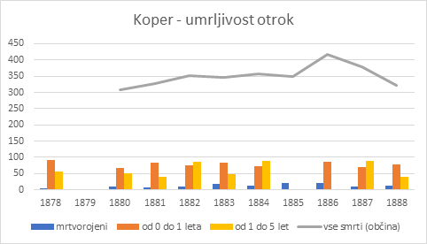

1V prispevku je opazovan diskurz, ki se je v Avstrijskem primorju (zlasti v Trstu) spletal okrog razprav o higienizaciji in asanaciji urbanega prostora. Pri tem so izpostavljeni od konca 19. stoletja naraščajoč družbeni pomen higiene v najširšem smislu, zavedanje o pomenu bivanjskih pogojev v urbanem prostoru ter vpliv socialnih okoliščin na otroško umrljivost. Slednja je bila namreč eden ključnih medicinskih, higienskih, moralnih in političnih argumentov za prikaz pomanjkljivih prizadevanj na področju zdravstvene preventive ter hkrati podlaga za širjenje modernih, z napredkom povezanih (meščanskih) idej, tudi skozi imperative, ki so naslavljali materinsko nego. Poleg tega je kvantitativni del analize podobno kot za Trst tudi za Koper vsaj deloma pokazal, da je bil velik delež smrti med otroki do petega leta starosti verjetno povezan prav s socialno deprivacijo tako z vidika higiene in prehrane kot profilakse in medicinske kurative.
2Ključne besede: higienizacija, bivanjske razmere, otroška umrljivost, Trst, Koper, 1870–1914
1CROWDED DWELLINGS AND OTHER THREATS TO HEALTH: HYGIENISATION DEBATES IN THE AUSTRIAN LITTORAL AT THE END OF THE 19TH CENTURY
2The following paper observes the discourse developing in the Austrian Littoral (especially in Trieste) around the debates regarding hygienisation and urban sanitation. It highlights the growing social importance of hygiene in its broadest sense since the end of the 19th century, the awareness of the importance of living conditions in urban areas, and the impact of economic circumstances on infant mortality. The latter represented one of the crucial medical, hygienic, moral, and political arguments to demonstrate the lack of efforts in health prevention and the foundation for the spread of modern, progress-related (bourgeois) ideas, also through the imperatives addressing maternal care. Moreover, the quantitative part of the analysis for both Trieste and Koper indicates that the considerable proportion of deaths among children under five years of age was probably related to social deprivation, also in terms of hygiene, nutrition, prevention, and health care.
3Keywords: hygienisation, living conditions, infant mortality, Trieste, Koper, 1870–1914
1V enem od svojih predavanj je Foucault dejal, da se je v 19. stoletju tudi pod vplivom liberalizma pojavil nekakšen vseprisoten dražljaj nevarnosti, ali z njegovimi besedami: »Izginili so jezdeci apokalipse in, nasprotno, nastopile, nastale, vdrle so vsakdanje nevarnosti, ki jih nenehno oživlja, reaktualizira, spravlja v obtok nekaj, kar bi lahko imenovali politična kultura nevarnosti 19. stoletja, ki pa se kaže na raznolike načine.«1 Eden od teh naj bi bile tudi kampanje v zvezi z boleznimi in higieno, ki so nastajale kot posledica različnih vrst nevarnosti, ki jih je prinašalo življenje v tistem času. V tem opažanju zlahka prepoznamo številne kolektivne strahove, ki so prevevali tedanjo družbo, čeprav seveda ne vseh njenih segmentov v enaki meri: strahove pred umazanimi telesi in prostori, pred natrpanimi revnimi stanovanji, pred zdravju nevarnim smradom, pred širjenjem nalezljivih bolezni idr.
2Vprašanje je zelo široko, saj posega na področje higienizacije,2 ki je razmah doživljala tudi zaradi odziva na večje epidemije, zlasti kolere,3 pod tem pojmom pa se je »skrivalo široko polje družbene prevzgoje, v katero so bili zasidrani novi standardi mestne higiene, povezani z ravnanjem z lastnim telesom in z boleznimi, pa tudi s sanacijo mestnega prostora«.4
3Vendar pa bo v tem prispevku poudarek predvsem na enem segmentu tega vprašanja, in sicer na otroški umrljivosti kot kazalniku »neuspešne asanacije« mestnega prostora in nezadostnega prizadevanja za infiltriranje modernih, z napredkom povezanih idej med širše družbene plasti. Namen prispevka je tako razgrniti širšo sliko prizadevanj za izboljšanje bivanjskih in življenjskih pogojev v urbanem prostoru, in sicer na primeru Trsta ob koncu 19. stoletja, ki se je v času svoje ekonomske moči soočal s številnimi izzivi zaradi naraščanja mestne populacije in obenem proletarizacije ter s slabimi bivanjskimi razmerami, v katerih je živelo delavstvo. Da bi eden ključnih argumentov zdravnikov, higienikov in oblastnikov – visok delež otroške umrljivosti – dobil tudi oprijemljivejšo numerično podlago, bo podan prerez podatkov za Trst, na primeru Kopra pa krajša analiza vzrokov smrti pri otrocih. S pomočjo različnih virov se bo skušalo podkrepiti tezo, da je na visoko stopnjo umrljivosti med otroki odločilno vplivala socialna deprivacija tako z vidika higiene in prehrane kot profilakse in medicinske kurative.
1Konec 70. let 19. stoletja so v Trstu razmišljali o predlogih za celostno ukrepanje na ravni urbanih bivanjskih razmer, ki bi prispevali k zmanjšanju bolezni in s tem stroškov za medicinsko oskrbo.5 Ko je bilo leta 1880 objavljeno poročilo posebne komisije tržaškega Društva za napredek (Società del progresso),6 katere namen je bil preučiti »najprimernejše ukrepe za izboljšanje higienskih razmer v mestu, s posebnim poudarkom na stanovanjih in vzreji otrok iz revnega sloja«,7 so si v Trstu v povezavi z visoko otroško umrljivostjo postavljali vprašanja, ali imajo otroci v mestu res slabše pogoje preživetja kot drugod, morda zaradi prirojenih ali podedovanih bolezni, ter tudi, ali je ta umrljivost povezana z nalezljivimi oziroma epidemičnimi boleznimi, vendar je bila ta hipoteza ovržena.8 Pisci poročila so tako iskali posebne razloge, ki naj bi pojasnjevali situacijo: kopičenje prebivalstva in nezdrava stanovanja v najrevnejših mestnih četrtih; veliko zanemarjanje, ki spremlja vzgojo otrok revnega razreda in njihovo zdravljenje med pogostimi boleznimi, ter nenazadnje pomanjkanje tistih ustanov, »katerih dobrine danes vsa velika in civilizirana mesta zagotavljajo za uspešno vzgojo otrok revnega razreda«. Ti dejavniki naj bi vplivali zlasti na visoko umrljivost v starostni skupini od ena do pet let, na splošno (ne starostno ali spolno pogojeno) umrljivost9 pa naj bi imela vpliv vsaj še pomanjkanje pitne vode in posledično njena omejena uporaba za higienske namene ter pomanjkljiv sistem kanalizacije.10
2Problematika počasne higienizacije mesta je bila v Trstu pereča še tudi na prelomu iz 19. v 20. stoletje;11 posebej slabo naj bi na zdravje otrok vplivalo bivanjsko okolje. To pa, kakor so ugotavljali, ne more biti ustrezno, če na primer družina živi v majhnem prostoru, kjer ima za osem oseb le dve postelji, pri čemer je ena namenjena petim otrokom, druga pa staršem in najstarejšemu otroku.12 Tako je tudi tržaški zdravnik dr. Arturo Castiglioni13 (ki je imel pri svojem delu neposreden stik z revnimi okolji) zapisal, da so bolniki pogosto primorani »bivati s štirimi ali petimi otroki v bedni sobi, bodisi v kleti ali na podstrešju, kjer se morajo skoraj plaziti po rokah in kolenih, da ne udarijo z glavo ob tramove«.14 Ta tesna stanovanja je opisoval kot »zapore, zavetišča, pesjake«, v katerih vladajo umazanija, vlaga, zatohlost in tema.15 Tudi Attilio Fruehbauer se je strinjal, da natrpana stanovanja težje ustrezajo kriterijem higiene kot prostornejša: na podlagi popisnih podatkov iz leta 1890 je želel predstaviti prenaseljenost v Trstu, pri čemer je (upoštevajoč kriterije Francoza Bertillona, po katerih se stanovanja označijo kot prenatrpana, če ima posameznik na voljo »manj kot pol sobe«) ugotavljal, da je v mestu prenatrpanih 49,6 % enosobnih bivališč, v posameznih predelih (zlasti na obrobju, npr. S. Anna, Sv. Jakob, Sv. Ivan, Frned, Rojan) pa so ti deleži lahko dosegali tudi 50 % in več, podobno je veljalo za dvosobna.16
3Predel ožjega mestnega jedra, kjer je živelo revnejše prebivalstvo, je bila predvsem Città vecchia (Staro mesto), medtem ko je na mestnem obrobju v več predelih živelo delavstvo, denimo pri Sv. Jakobu in v Rocolu,17 hkrati pa so bili to tudi predeli, kjer so večji davek terjale nalezljive bolezni, denimo kolera.18 Tudi splošne vrednosti umrljivosti po četrtih so izkazovale specifično socialno strukturo. Ob iztekanju 19. stoletja se je umrljivost na 1000 prebivalcev po tržaških četrtih sicer zniževala; če je bila vrednost okrog 30 in več v desetletju 1880–1890 dosežena v predelih Barriera vecchia, Città vecchia, S. Anna, Frned, Rojan, Sv. Ivan, Sv. Jakob, Prosek, Bazovica, je bila ob začetku novega stoletja tako izrazita le še pri zadnjih treh, čeprav je ostajala dokaj visoka tudi v prej omenjenih predelih.19
1Stanovanjski pogoji sicer niso bili edini dejavnik, ki je vplival na zdravje ljudi, saj je higiena v najširšem smislu zajemala še druge vidike vsakdanjega življenja – od skrbi za čistočo telesa in prostora do prehrane itd. Da je skrb za zdravje prebivalstva ena ključnih družbenih prioritet, ni bilo dvoma. Hkrati je higienizacija predstavljala tudi enega od označevalcev napredka; ko je posebna komisija v Kopru konec 19. stoletja opravljala obhod po mestu, je med svojimi ugotovitvami podala mnenje, da so ponekod bivanjsko-higienske razmere »povsem nezdružljive z zahtevami higiene in idejami napredka«.20 O družbenem pomenu higiene je razpravljal tudi Vincenzo De Giaxa,21 ki je sicer sledil idejam britanskega politika Benjamina Disraelija, da je izboljšanje javnega zdravja družbena tema, ki bi morala biti pred vsemi ostalimi. Zdrava bivališča, čista pitna voda, ustrezna živila, zdrav zrak so pogoji, ki prispevajo k zdravju in dobrobiti človeka, se pa na podlagi higienskih pogojev presoja tudi pozicijo in pomembnost naroda. Če namreč statistike kažejo na upadanje prebivalstva, se izgublja tudi narodov zgodovinski pomen, zapiše. Interes države, da ima številčno populacijo, je v prvi vrsti pogojen s fizičnim razvojem njenih prebivalcev – »vse, kar se aktivira za izboljšanje sanitarnih razmer, je tudi podlaga za veličino in sijaj nekega naroda«.22 Koristi javne higiene naj bi bile različne – od izboljšanja vrste (pravzaprav v evgeničnem smislu) do zmanjšanja obolevnosti ter podaljševanja življenja oziroma manjšanja prezgodnje umrljivosti.23 To je bilo mogoče doseči v okviru zasebne sfere ali v okviru institucij, ki so jim bili otroci zaupani v oskrbo.
2Da je zagotavljanje ustreznih institucij v Trstu pomanjkljivo, je bilo denimo leta 1880 zapisano v že omenjenem poročilu, kjer so bile k ustanovam za dobrobit otrok štete tiste, namenjene dojenčkom, otroški vrtci ter otroške bolnišnice.24 V mestu je bila v tem času ena sama ustanova za dojenčke (namenjena otrokom revnih mater, ki odhajajo na delo), otroški vrtci (ki so sprejemali otroke iz revnih družin, stare od tri šest let) so bili štirje (javni) s skupno kapaciteto za 600 otrok, kar ni zadostovalo. Po tem viru je bilo v mestu več kot 7500 otrok, starih od tri do pet let, od katerih naj bi jih vsaj polovica pripadala revnejšim slojem. Poleg tega naj bi bile številne od teh ustanov preveč oddaljene za mnoge prebivalce, kar je predstavljalo težavo predvsem ob zimskem mrazu.25 Od medicinskih ustanov sta bili v mestu le dve, ki sta sprejemali revne bolne otroke vseh starosti,26 vendar so bili v eni otroci pomešani z odraslimi pacienti (civilna bolnišnica), otroška bolnica pa je premogla le osemnajst postelj.27 Zaradi vsega naštetega je bil podan predlog za vzpostavitev dodatne ustanove, namenjene dojenčkom, ter za izgradnjo novega vrtca. Obenem je komisija Društva za napredek predlagala uvedbo medicinskega nadzora tako za javne kot zasebne vrtce, in sicer tedensko (ne več na mesečni ravni) za javne, za zasebne pa na dva tedna.28
3Hkrati je bila podana tudi pobuda za združenje, katerega namen naj bi bil »z vsemi močmi ter najprimernejšimi in najrazličnejšimi sredstvi spodbujati uspešno vzgojo otrok revnega razreda« v mestu29 – to je bilo Društvo prijateljev otrok (Società degli amici dell'infanzia), ki je bilo naposled res ustanovljeno leta 1884.30 Njegove glavne naloge, kakor so bile predvidene v začetni pobudi, pa naj bi bile: dodeljevanje subvencij revnim in pomoči potrebnim družinam, ki imajo bolne otroke in ki bi po zdravniškem potrdilu ljubeče skrbele zanje; brezplačno razdeljevanje oblačil otrokom tistih revnih staršev, ki na podlagi potrdila učiteljic civilnih otroških vrtcev bolje skrbijo za čistočo svojega telesa in oblačil, ter tudi bolnim otrokom, ki brez vsega zapustijo civilno ali otroško bolnišnico; razdelitev letnih denarnih nagrad, ki bi se podelile tistim materam iz revnih družin, ki bodo glede na ekonomske in higienske razmere, v katerih se nahajajo, uspešnejše pri vzgoji svojih otrok ali pri negi v času bolezni, s čimer bodo »pripravile ali ohranile zdrave ali krepke državljane, koristne za državo«.31 Že v 70. letih 19. stoletja pa je Castiglioni na podoben način predlagal denarne nagrade za ženske, ki bi ustrezno skrbele za otroke in tako ohranile ter pripravile »zdrave in domovini koristne državljane«.32
4Pomen otroškega zdravja za družbo – in državo – je (p)ostajal velik. Priznavanje, da ima družba določene odgovornosti glede ureditve nekaterih sistemskih rešitev (npr. glede razpoložljivosti institucij, namenjenih negi otrok in otročnic, seveda pa tudi glede socialnih mehanizmov za preprečevanje revščine ter higienizacijskih ukrepov …),33 je spremljal tudi imperativ po odgovornosti posameznikov (staršev), da omogočijo otrokom zdrav razvoj. Prav v tem polju pa se je ustvarjal prostor za vznikanje dihotomij »mi – drugi«, ki ga je mogoče prepoznati v moraliziranju glede higiene, to pa je prihajalo s strani meščanstva in je bilo namenjeno nižjim slojem, »tistim delavskim in revnim slojem, ki iz malodušja ali slabe kulture popolnoma zanemarjajo higienske in sanitarne predpise, ne da bi pomislili na higienske posledice za svoje otroke in otroke drugih«.34
5Castiglioni je bil do njihovega domnevnega odnosa do otrok posebej kritičen: zlasti trpeči otroci iz nižjih slojev naj bi bili breme za svoje starše, celo do tolikšnih skrajnosti, da tak »človek veliko manj obžaluje smrt otroka kot smrt vola ali konja«.35 Seveda je bila takšna trditev pretirana, a ob odsotnosti glasov z družbenega dna meščanski pogled ostaja tisti prevladujoči element, ki je – po odločni diferenciaciji od drugih razredov – opazno oblikoval tedanji družbeni diskurz. V drugi polovici 19. stoletja je srednji – meščanski razred še posebej krepil distanciranje od nižjih slojev,36 eno od polj distinkcije pa je v tem času vsekakor tudi čistoča kot kulturna vrednota, ki »označuje socialne pozicije, socialne razlike, socialne dolžnosti«.37
6Težko bi zanikali, da so tudi nasveti, priročniki, napotki o dobrem materinjenju ter nosečnosti (ki jih je narekovala medicinska znanost) poudarjali dolžnosti matere, ki so bile v tem kontekstu smatrane kot pomembne tudi v političnem oziroma nacionalnem smislu.
7»Kaj je za mlado mater najdragocenejša stvar? Njen otrok! Zato je zelo žalostno, da ta ne ve, kako skrbeti zanj; ne more mu pomagati v kritičnem trenutku in niti ne pozna vseh stopenj njegovega razvoja. Pa vendar se je kot mlado dekle učila zgodovine, geografije, kemije in morda tudi grščine, latinščine in logaritmov, ne ve pa niti, kdaj naj bi njenemu otroku zrasli prvi zobje, ne ve, kako naj ga povije ali doji. To je zelo žalostno!«38 sta trdila E. Marcus in G. Pattay, ko sta pisala o zgledu Švice, kjer je bilo ob izteku 19. stoletja izobraževanje iz higiene že obvezno, posebej za ženske – s takim ozaveščanjem o higieni pa bi se po njunem mnenju lahko izognili škodljivim predsodkom, čistoča hiš bi bila večja, veliko manj pa bi bilo otroških smrtnih žrtev zaradi bolezni in zdravstvenih zapletov.
1Po podatkih za Koper, ki so bili na podlagi matičnih knjig analizirani še pred prvo svetovno vojno39 je bilo tu v obdobju 1880–1899 na 100 umrlih 25,6 dojenčkov do enega leta starosti, 23,5 pa otrok od enega do desetega leta starosti, medtem ko je bilo denimo mladih med 20 in 30 let 8,47 na 100 umrlih.40 V primerjavi z obdobjem od 1850 do 1871 je šlo le za rahel upad.
2Številke si je mogoče ogledati tudi v ožjih časovnih segmentih, ki jih razgrinjajo zdravstvena poročila občine Koper za posamezna leta. V desetletju 1878–1888, ko so podatki dokaj konsistentni, je umrljivost otrok mogoče pogledati še podrobneje, saj je kategorija, ki zajame tiste med enim in desetim letom starosti, preširoka in premalo povedna. Tudi sočasne razprave so se zavedale pomena ločevanja najmlajših otrok na podskupine (novorojenčki do enega leta, otroci od enega do petega leta starosti), saj so bile med umrljivostjo le-teh velike razlike. V sodobnih študijah je ta argument seveda splošno sprejet; posamezne faze zgodnjega otroštva (neposredno po rojstvu, med dojenjem, med in po odstavljanju) naj bi bile obravnavane ločeno, saj so podvržene različnim dejavnikom tveganja.41 Doba do prvega dopolnjenega leta starosti naj bi bila v največji meri biološko-genetsko pogojena, v obdobju odstavljanja (torej po prenehanju dojenja) pa se običajno zaznava močnejši vpliv družbeno-ekonomskih dejavnikov (otrok je namreč dovzetnejši za različna tveganja od zunaj).42 V tej fazi je v interpretacijo otroške umrljivosti smotrno vključiti razne okoljske in socialne dejavnike; med temi so npr. bivanjski pogoji, prehranjenost, ekonomska situacija, vključenost žensk v (fizično) delo ter njihova skrb za lastno zdravje in zdravje otroka, razširjenost medicinskih znanj v določenih okoljih, predsodki in ljudska verovanja, povezana s porodnimi praksami ter nego novorojenčka, različne oblike asistence in dovzetnost za institucionalizirano zdravstveno oskrbo nosečnic, porodnic, otročnic in otrok, zdravstveni normativi, uvajanje novih profilaktičnih in kurativnih metod ipd.43
3Koprska zdravstvena poročila tako kažejo, kako velik delež so predstavljale predvsem smrti otrok, starih med nič in pet let. Številke za občino Koper pričajo, da je bil ta delež za posamezna leta (kjer je to na podlagi razpoložljivih podatkov mogoče ugotoviti) v obravnavanem desetletju običajno višji od 35 %,44 znašal pa je lahko tudi več kot 45 % smrti na letni ravni.45 Na grafu 1 so te vrednosti prikazane posebej za dojenčke, stare do enega leta, in otroke med prvim in petim letom starosti, pri čemer je videti, da je neonatalna umrljivost pogosto presegala tisto v starejši skupini otrok.

4V bližnjem Trstu so bile številke še bolj skrb zbujajoče. V petletju med 1875 in 1879 je skupno umrlo 22.592 ljudi, od katerih je bilo novorojenčkov do prvega leta 6309, otrok od dopolnjenega prvega do petega leta starosti pa 4740. Proporcionalno gledano (na 1000 prebivalcev) je prva starostna skupina v Trstu zajemala 10,6 promila (za primerjavo, na Dunaju osem promilov), druga pa 5,3 promila (na Dunaju štiri).46 Med letoma 1877 in 1879 je v skupini od ena do pet let umrlo 73 na 1000 živih otrok, medtem ko je to število v skupini med pet in deset let znašalo le štirinajst na 1000 živih otrok.47
5Če je v tem obdobju v oči zbodla visoka stopnja otroške umrljivosti v Trstu v primerjavi z drugimi evropskimi mesti, v začetku 20. stoletja niso bili več tako zaskrbljeni; umrljivost novorojenčkov (ki je v absolutnih vrednostih prikazana v spodnji tabeli) naj ne bi opazno odstopala od drugih urbanih središč.48 Umrli dojenčki do prvega leta starosti naj bi predstavljali okrog 25 % vseh smrti oziroma 20,8 na 100 živorojenih otrok, ta vrednost pa je bila desetletje pred tem še višja (22,4).49 Otroci med prvim in petim letom starosti naj bi v letu 1900 predstavljali 14,3 % vseh smrti (oziroma 32,1 na 1000 živih), leto zatem 12,4 (oziroma 39,5 na 1000 živih), leta 1902 pa 15,6 % (oziroma 42,2 na 1000 živih), to pa je bilo vseeno bistveno manj kakor na primer v obdobju med 1891 in 1894, ko je bilo umrlih otrok v tej starostni skupini kar 69 na 1000 živih. Vzroke smrti so uradna poročila pripisovala predvsem infekcijskim boleznim, vključno s tuberkulozo, ki je bila močno prisotna, ter »akutnim boleznim« respiratornih organov.50
| leto | 0–1 mesec | 1 mesec–1 leto | 1–5 let | 5–10 let |
| 1900 | 365 | 891 | 698 | 129 |
| 1901 | 409 | 682 | 566 | 123 |
| 1902 | 415 | 788 | 745 | 124 |
6Čeprav podatki iz cerkvenih registrov niso vselej primerljivi z uradnimi statistikami (med drugim zato, ker vsebujejo zapise smrti tudi za prebivalce okoliških krajev, župnij oziroma občin, ki so umrli v mestu), pa lahko ponudijo vpogled v natančnejše vzroke smrti, ki so jih navajali ob umiranju otrok.
7Med letoma 1883 in 1885 (gre tudi za obdobje, ko ni bila prisotna nobena opaznejša epidemija, ki bi sliko otroške in splošne umrljivosti seveda spremenila) so denimo v Kopru beležili okrog 37 % smrti otrok do prvega leta starosti, ki so umrli zaradi oslabljenosti51 (debilitas, debilitas / debolezza congenita, tudi marasmus) oziroma slabih pogojev v nosečnosti (zato je sem prištet tudi rahitis), okrog 12 % zdravstvenih stanj, ki so prizadela dihala (sem so všteti bronhitis, oslovski kašelj, krup in davica), dobrih 22 % smrti je bilo domnevno povezanih z napačno prehrano (enterite, gastroenterite, convulsiones …), 8,8 % z »eklampsijo«, 6,5 % s tetanusom novorojenčkov (trismus), približno 5,5 % pa s tuberkuloznimi obolenji (tuberkuloza, consumptio, tabes, škrofuloza).52
8Pri otrocih po dopolnjenem prvem letu do vključno petega leta starosti pa so obolenja dihal zajemala 31,8 %, eklampsija 3,5 %, prehransko pogojena stanja 14,4 %, oslabelost 23,7 %, tuberkulozna obolenja pa okrog 4 %. Žal pa iz matičnih knjig ni razvidna socialna struktura, ki bi lahko osvetlila povezavo z določenimi vzroki smrti. Vsaj teoretično je pripadnost določeni družbeno-ekonomski kategoriji gotovo vplivala na dostop do virov, zlasti prehrane, na izpostavljenost okužbam, osebno higieno, vpetost v delo, na značilnosti bivališč, vključno s prisotnostjo (ali odsotnostjo) ogrevanja, ter na razna druga življenjska tveganja.53 Vsi ti dejavniki so tvorili skupek okoliščin, ki so na različne načine lahko prispevale k večji obolevnosti in umrljivosti otrok.
1Številne smrti otrok v Kopru, ki so bile – posebej v prvem mesecu življenja – pripisane prirojeni oslabelosti (debolezza congenita),54 naj bi bile posledica »nehigienskih in prehranskih razmer njihovih mater« in pogosto tudi »alkoholizma njihovih očetov«.55 Pri tem so pisci tovrstnih razprav s prstom kazali tudi na starše, ki naj bi nosili velik del odgovornosti za zdravje svojih otrok. To je bilo tudi tisto zanemarjanje med nižjimi sloji, o katerem so poročale omembe bosih in na pol golih otrok, prepuščenih tržaškim ulicam, ter visokega deleža otrok, ki umirajo brez kakršnekoli medicinske asistence.56 Ali pa težke razmere, o kakršnih je govoril Castiglioni, ko je opisoval nezdrava stanovanja, v katerih so zaprti otroci, ker morajo njihove matere delati,57 ter nenazadnje pomanjkljiva telesna higiena, ko naj otroška telesa »tudi po več tednov ne bi imela stika z vodo, kaj šele z milom«.58
2Drugi vidik tega vprašanja je bila zagotovitev ustreznih pogojev za še nerojenega otroka. Matere naj bi namreč že v času nosečnosti stremele k temu, da se bo otrok razvijal v zdravem telesu in se bo naposled rodil živ (kar še zdaleč ni bilo samoumevno)59 in zdrav. Zdravje matere v času rojstva otroka in pred njim, prehrana novorojenčka itd. so bile vsekakor ključne spremenljivke, ki so bile pomembne za preživetje otroka; poslabšanje materinega zdravja je lahko na primer vodilo v mrtvorojenost ali umrljivost novorojencev, manjša prisotnost matere (običajno zaradi dela) in posledično posluževanje prilagojenega načina prehranjevanja otroka (umetno mleko, dojilje – plačano dojenje, prehitro odstavljanje) pa sta lahko prispevala k zgodnji umrljivosti.60 Podobni so bili tudi argumenti zdravnikov, ki so od poznega 19. stoletja analizirali rast otroške umrljivosti in med drugim promovirali dojenje, ki so mu pripisovali poseben pomen.
3Pierpaolo Luzzatto Fegiz, ki je sicer na pragu 30. let 20. stoletja ugotavljal, da se je v Trstu otroška umrljivost na prelomu iz 19. v 20. stoletje zmanjšala za okrog 40 %, je vzroke za smrti najmlajših otrok delil na več skupin, pri čemer se prva (kamor sodi prirojena slabotnost) pripisuje otrokom do petega leta starosti, nanjo pa vplivajo predvsem pogoji med nosečnostjo – prehranjenost, zdravje in starost staršev. Posebni skupini tvorita na eni strani tuberkuloza in sifilis, na drugi pa respiratorne in infekcijske bolezni, medtem ko naj bi napake pri hranjenju otrok, npr. pomanjkljivo dojenje, prehitro odstavljanje zaradi dela ali nove nosečnosti, ki so bile pogoste med revnejšimi sloji, vplivale na umrljivost zaradi driske in enteritisa.61
4Alojz Valenta je v svojem babiškem učbeniku (1886) odločno zapisal: »Ako je mati zdrava, je njena sveta dolžnost, da otroka sama doji, sicer ni vredna lepega imena in sreče, da je mati. Otrok ima pri materi živež, kateri je njemu najprimerniši; to ohrani otroku življenje in dobro zdravje.«62 Podobnega mnenja je bil tudi pisec priročnika za (slovenske) matere, Štefan Kočevar (1882),63 njunim delom pa so sledile tudi časopisne objave, na primer:
»Umrljivost otrok v prvem letu je izvanredno velika, in največ bolezni izvira iz slabe, napačne hrane. Kakšno hrano pa moramo otroku v prvem letu dajati? Narava daje nam na to prav natančen odgovor. Edina in nenadomestljiva hrana za novorojenca je materino mleko, in vender je na tisoče mater, ki otroku iz popolnoma neopravičenih vzrokov te edino prave hrane ne privoščijo. Statistično je pa dokazano, da izmej 100 otrok, ki dobivajo naravno hrano, umrje jih le 10 do 17, in izmej 100 otrok, katerim dajejo umetno hrano, umrje jih 82 do 90. Oziraje se na te številke, moramo izreči sodbo, da vsaka mati, koja brez pravega vzroka telesne slabosti ali zdravniško dokazane nesposobnosti svojemu otroku naravno hrano zabranjuje, je kriva ropa nad lastnim otrokom, kojega nikdar ne more poravnati.«64
5O negi otrok je bilo v tedanjem časopisju na Slovenskem veliko napisanega, iz številnih objavljenih vrstic pa je mogoče razbrati prav nagovarjanje k dojenju.65 Te tendence so se (v kontekstu zaščite otrok, ki je predstavljala garancijo za napredek in obstoj naroda) okrepile po prvi svetovni vojni.66
6Najboljša in najprimernejša hrana za otroke je materino mleko, se je leta 1877 ob opisovanju umrljivosti tržaških otrok strinjal tudi Castiglioni, zato naj vsaka mati, ki ima ustrezne higienske pogoje, svojega otroka doji, namesto da bi ga zaupala plačani oskrbi tujke ali se, kar je še huje, zatekla k umetnemu hranjenju. Obsoja »tiste matere, ki se kljub temu, da so jim zagotovljeni vsi zahtevani pogoji, le zaradi udobja, nečimrnosti, pretirane ljubezni do užitkov ali drugih nič manj obsojanja vrednih razlogov« odločijo, da otroka ne bodo dojile,67 saj je umrljivost pri takih otrocih veliko večja, dejanska nezmožnost mater, da dojijo, pa veliko redkejša, kakor se sicer pogosto predpostavlja68 – če je v zadnjih letih naraslo število mater, ki ne dojijo, nadaljuje Castiglioni, pa gre to pripisati predvsem »slabim navadam žensk«.69 Teh očitkov pa niso bile deležne tiste ženske (iz delavskega razreda), ki so bile zaradi socialnih razmer primorane pustiti svoje otroke v varstvu, medtem ko so delale (Castiglioni – kot zdravnik sicer predstavnik italijanske elite – navaja primere okoliških peric, krušaric, prodajalk in delavk v tovarnah/skladiščih), temveč tiste, ki so to storile iz lastnega samoljubja. Zanimivo je sicer, da so bile prav perice s koprskega in tržaškega podeželja, nasprotno, s strani slovenskega časopisja (pri katerem je bil v ospredju predvsem nacionalni motiv) pogosto grajane zaradi »zanemarjanja gospodinjskih in materinskih dolžnosti«, saj naj bi se z oddaljitvijo od doma, z opravilom, ki jim je vzelo veliko časa (in z opravljanjem dela za premožno mestno prebivalstvo italijanske narodnosti) odpovedale vestnemu izvrševanju vloge žene in matere.70
7Ob kongresu za varstvo otrok in mladine avstrijskih dežel, ki je leta 1907 potekal na Dunaju, kjer so delegati iz posameznih dežel poročali o stanju v državi,71 je izšel tudi povzetek poročila glede »primorske zanemarjene mladine«, v katerem je mogoče prebrati:
»Da je tržaška mladina tako zanemarjena, povzroča pač v veliki meri, ker so prisiljeni stariši, delavci in delavke, da prepuščajo otročiče brez vodstva in nadzorstva. Tudi stanovanja vplivajo na pokvarjenost tržaške mladine. Ne glede na starost in spol stanujejo ljudje po ozkih luknjah, kjer otroci vidijo stvari in čujejo govorice, ki bi jim morale ostati skrite. Otroci izgube sramežljivost in tudi na njihovo zdravje vpliva to neugodno. V eni postelji leže ne ravno redko poleg starišev otroci, po dva, po trije in to tudi taki, ki so že stari nad deset let.«72
8Strah pred moralno izprijenostjo je šel z roko v roki z revščino; razprave, ki so razglabljale o higienskih ukrepih, so običajno izpostavljale tudi pomen duševne (nravstvene) vzgoje otrok in mladine, v medicinskem diskurzu pa je bila neprisotnost mater povezana predvsem z neustreznim hranjenjem otrok. Mnogoštevilne smrti dojenčkov zaradi zdravstvenih težav na prebavilih so sprožale nemalo razprav.
9Otroški enteritis (enterite infantile) so v tistem času povezovali »s hudimi ponavljajočimi se napakami pri dojenju in prehrani dojenčkov. Zaradi očitnih razlogov (higienska vzgoja in poklic mater) je pogostejši v revnejših slojih. [...] slabši življenjski pogoji revnih mater med nosečnostjo, primanjkljaji pri dojenju in potreba po prezgodnjem prenehanju dojenja zaradi dela ali nove nosečnosti ... so ključni vzroki«.73 Dejansko je šlo najverjetneje za zaplet ob hranjenju otrok s polnomastnim kravjim mlekom, pri čemer je – zaradi nezmožnosti dojenčkov, da tako mleko prebavijo – prišlo do hudega draženja črevesja, driske in močnih krčev.74
10Zaplet je lahko preprečilo vsaj redčenje kravjega mleka, ki so ga uporabljali za prehrano dojenčkov. Slovenski porodničarji so imeli glede tega različna priporočila. Štefan Kočevar je v svojem priročniku za matere svetoval mešanje (prekuhanega!) mleka z vodo, in sicer za enomesečne dojenčke v razmerju 3 : 1, za dvo- in trimesečne 1 : 1, za štirimesečne pa 2 : 1,75 za razliko od njega pa je Alojz Valenta v svojem priročniku (ki je bil sicer tudi del učnega gradiva za slovensko govoreče babice v babiški šoli v Trstu76) že v tretjem mesecu za dojenčke priporočal nerazredčeno kravje mleko.77 Vsekakor lahko domnevamo, da so bili pri hranjenju, ki je nadomeščalo dojenje, v praksi različni načini, od katerih so bili lahko mnogi za otroke tudi usodni.
11Ni pa povsem jasno, kaj je v koprskih cerkvenih registrih druge polovice 19. stoletja predstavljala oznaka ecclampsia (tudi eclampsia, spasimo, eclampsia nutans), ki je zabeležena pri otrocih, in sicer večmesečnih dojenčkih. Tudi pri tem zapletu v medicinskih priročnikih beremo o krčevitem gibanju: »Prizadeti dojenčki in otroci sklanjajo glavo in rahlo nagnejo telo naprej, kar se ponavlja zelo hitro, včasih dvajsetkrat, petdesetkrat in celo stokrat, nato pa preneha in se ponovi, tudi večkrat v 24 urah. Med napadom je otrok videti prestrašen, vendar se takoj, ko gibi prenehajo, vrne popolna zavest.«78 Morda bi tudi v tem primeru lahko šlo za prehransko pogojen zaplet.
12Na drugi strani pa je bil pogost vzrok smrti seveda tudi tetanus novorojenčkov (tetanus neonatorum), ki ga povzroča enterotoksin, izločen iz bakterije Clostridium tetani (odkrite leta 1889) in vpliva na možgane, hrbtenjačo in živčevje, zato se pri obolelem pojavljajo tonični krči mišic čeljusti, zatilja, hrbta in trebušne stene, lahko tudi dihalnih mišic, glasilk in mišic sapnika.79 To nevarno stanje je (kot »čeljustni krč«) opisal tudi Valenta.80 V koprskih virih je tetanus mogoče prepoznati pod oznako thrismus (oziroma trismus, trismo), ob odsotnosti preventivnih metod, pa tudi neustrezne obporodne oskrbe, je bilo njegovo pojavljanje seveda pogosto.
1V prispevku je bil opazovan predvsem diskurz, povezan z otroško umrljivostjo, ki se je v Avstrijskem primorju (zlasti v Trstu) spletal okrog razprav o higienizaciji in asanaciji urbanega prostora. Čeprav so deloma na te iniciative vplivale tudi nalezljive bolezni, ki so se v 19. stoletju pojavljale v epidemični obliki, to ni bil prevladujoč vzrok za visoko smrtnost otrok, posebej v prvem letu življenja ter od dopolnjenega prvega do petega leta starosti. Na visoko stopnjo umrljivosti med otroki je tudi v začetku 20. stoletja namreč opazno vplivala socialna pripadnost tako z vidika higiene in prehrane kot profilakse in medicinske kurative. Strah pred kopičenjem revnega prebivalstva v tesnih stanovanjih, pred širjenjem bolezni, umiranjem otrok je bil izražen tudi v razočaranjih nad nezadostno asanacijo mestnega prostora in neuspešnim infiltriranjem modernih, z napredkom povezanih (meščanskih) idej med širše plasti prebivalstva. Prizadevanja za izboljšanje bivanjskih in življenjskih pogojev v urbanem prostoru, ki so bila večinoma zgolj teoretična, pa niso imela podlage le v filantropskih, ampak tudi (ali predvsem) v ekonomsko in politično podkrepljenih motivih.
* Članek je nastal v okviru raziskovalnega projekta J6-3121 Desetletje dekadence. Državljanstvo, pripadnost in brezbrižnost do države na severno-jadranskem mejnem območju, 1914–1924, ki ga sofinancira Javna agencija za znanstvenoraziskovalno in inovacijsko dejavnost republike Slovenije iz državnega proračuna.
** Dr., znanstvena sodelavka, Znanstveno-raziskovalno središče Koper, Inštitut za zgodovinske študije, Garibaldijeva ulica 1, SI-6000 Koper, urska.bratoz@zrs-kp.si; ORCID: 0009-0005-5047-3572
1. Foucault, Rojstvo biopolitike, 67.
2. Ta zajema tako telesno kot prostorsko higieno, tako zasebni kot javni prostor ter obenem odpira raznolike teme (stanovanjske razmere, vprašanja komunalne infrastrukture, prostorske in telesne higiene …), ki jih je v svojih številnih delih tako pronicljivo obdelal Andrej Studen; npr. Za zdravje je potrebna, Ko zabolijo nosnice, Smrdelo je …, Stanovati v Ljubljani, mnoge vidike pa je osvetlila tudi Meta Remec (Podrgni, očedi).
3. O tem gl. npr. Bratož, Bledolična vsiljivka. Keber, Čas kolere. Studen, Epidemije kolere.
4. Studen, »Samoumevna« čistoča, 312.
5. Buzzi, Processi verbali. Gl. tudi Remec, Podrgni, očedi, 49.
6. Nastalo je leta 1868 kot politično združenje italijanskih liberalcev, ki so bili naklonjeni iredentističnim idejam in združitvi Trsta z Italijo (gl. npr. Ličen, Meščanstvo v zalivu,, 123).
7. »… provvedimenti più atti a migliorare le condizioni igieniche della città, con ispeciale riflesso alle abitazioni ed allevamento dei bambini della classe povera.« ‒ Provvedimenti, 1.
8. Prav tam, 7.
9. Castiglioni, La mortalità, 57.
10. Provvedimenti, 7. O potrebah po asanaciji mestne higiene v Trstu gl. npr. Braulin, La questione.
11. Gl. Marcus in Pattay, Le condizioni. Do razpada Avstro-Ogrske tako na tržaški občini ni prišlo do sprejetja urbanističnega načrta niti ni dovolj energično potekalo vzpostavljanje osnovne infrastrukture, denimo vodovoda; gl. Žerjal, Ljudska gradnja, 603.
12. Marcus in Pattay, Le condizioni, 4.
13. Castiglioni (1843–1905) je bil tržaški pediater in filantrop ter direktor prvega Morskega hospica, ki je uvajal helio- in talasoterapije za otroke s škrofulozo (primarno tuberkulozo vratnih bezgavk), od leta 1897 pa je bil tudi predsednik Društva prijateljev otrok; gl. Braulin, La questione sanitaria, 30.
14. Castiglioni, La mortalità, 28, 29.
15. Predlagal je, da bi pristojne komisije pregledale revne četrti in ocenile, katera stanovanja so (glede na »znanstveno določena pravila higiene«) neprimerna za bivanje, določiti pa bi bilo treba tudi maksimalno število stanovalcev na posamezno enoto, a bi to morali upoštevati tudi sobodajalci. ‒ Prav tam, 42.
16. Fruehbauer, Le condizioni, 26. Prim. Panjek, Gradnja in stanovanja.
17. De Giaxa in Lustig, Relazione. Žerjal, Ljudska gradnja.
18. Gl. Bratož, Bledolična vsiljivka.
19. L'amministrazione, 57, podobno pa ugotavlja Castiglioni, La mortalità za leto 1876.
20. SI PAK KP 7, t. e. 249, a. e. 2315/XIV.
21. De Giaxa (1848–1928) je bil na Dunaju izobražen istrski zdravnik, ki je (v času ene od epidemij kolere) deloval kot protomedik v Trstu, bil pa je tudi profesor za higieno v Pisi in Neaplju - Treccani.
22. De Giaxa, Teoria generale, 71.
23. Prav tam, 73.
24. Otroška bolnišnica v Trstu (S. Vito, kasneje premeščena) je obstajala od leta 1856. Leta 1891 je imela na voljo 24 postelj, kasneje se je njihovo število povečalo na 74. ‒ Bevilacqua, Ospedali della Trieste.
25. Provvedimenti, 11, 12. Prim. tudi Castiglioni, La mortalità, 45, 46.
26. Otroke, mlajše od pet let, naj bi sicer sprejemala šele od leta 1872. ‒ Castiglioni, La mortalità, 51.
27. Provvedimenti, 12. Castiglioni je bil mnenja, da otroci potrebujejo tudi poseben oddelek v okviru splošne bolnišnice; namreč, otroška bolnišnica naj se ne bi želela ukvarjati z revnimi otroki, v civilni bolnišnici pa so bili hospitalizirani otroci razporejeni po različnih oddelkih, zato naj bi jih matere nerade puščale v nego. Tam tudi ni bilo enoposteljnih sob za izolacijo ob nalezljivih boleznih, kar bi sicer koristilo predvsem nižjim slojem, ki doma ne morejo zagotoviti osamitve od zdravih družinskih članov. ‒ Prav tam, 50–52.
28. Provvedimenti, 13.
29. Prav tam, 1.
30. O tem v Beltram (Ortopedska bolnišnica Valdoltra). Društvo je otrokom iz tržaške občine krilo okrevanje v Valdoltri, kjer je od leta 1904 delovalo okrevališče za zdravljenje tuberkuloznih in slabotnih otrok; o otroških okrevališčih Avstrijskega primorja gl. Kavrečič, Bolni otroci na okrevanju.
31. Provvedimenti, 15, 16.
32. »… a quelle madri della classe indigente, che avranno allevati i loro bimbi nel miglior modo possibile, in rapporto alle condizioni in cui versano, e che avranno in tal guisa conservato e preparato, cittadini sani ed utili alla patria«. ‒ Castiglioni, La mortalità, 4, 5.
33. En vidik reševanja teh vprašanj je bila tudi izgradnja socialnih stanovanj – o tem (za primere Trsta in Kopra) npr. Žerjal, Ljudska gradnja. Panjek, Gradnja in stanovanja. Marchigiani, Dall'edilizia sociale. Žerjal, Čebron Lipovec, Società cooperativa.
34. »… quelle classi operaie e povere, le quali, o per apatia, o per deficiente coltura, trascurano del tutto le norme igienico-sanitarie, senza riflettere alle conseguenze sanitarie che ne possono derivare per i propri bambini e per quelli degli altri« (Marcus in Pattay, Le condizioni, 16). O meščanskih imperativih glede higiene gl. Remec, Podrgni, očedi.
35. Castiglioni, La mortalità, 56.
36. Gl. npr. Kocka, The Middle Class.
37. Studen, »Samoumevna« čistoča, 296. Gl. tudi Ličen, Ravnanje z odpadki.
38. »Qual'è la cosa più cara ad una giovane madre? Il suo bambino! Adunque è ben triste, ch'essa non sappia allevarlo; non possa soccorrerlo al momento critico e non conosca nemmeno tutte le fasi del suo sviluppo. Eppure essa ha, da fanciulla, imparato storia, geografia, chimica e forse greco, latino e logaritmi e non sa nemmeno quando al suo bambino dovrebbero spuntare i primi denti, non conosce come lo debba fasciare o allattare. È ben triste!« ‒ Marcus in Pattay, Le condizioni, 17, 18.
39. Benussi, Frammento demografico. Za pojasnila glede metodoloških vrzeli tega dela gl. Kalc, Prebivalstvo Kopra (tu je podana tudi demografska analiza popisnih in župnijskih virov za Koper); omeniti velja, da avtor demografski prehod (postopno padanje stopnje natalitete ter nazadovanje smrtnosti) postavlja prav v čas 70. let 19. stoletja.
40. Benussi, Frammento demografico, 1021.
41. Derosas, Infant mortality, 66.
42. Prim. Manfredini in Pozzi, Mortalità infantile.
43. Derosas, Infant mortality.
44. Nič manjši pa ni bil niti tik pred iztekom 19. stoletja (SI PAK KP 7, t. e. 274, a. e. 63/XIV). Za analizo otroške umrljivosti v zgodnjem 19. stoletju gl. Kalc in Krmac, La mortalità. Za širšo sliko in komparativne podatke v zvezi z otroško umrljivostjo na ravni dežel v okviru Avstrijskega cesarstva v sredini 19. stoletja gl. npr. Dalla-Zuanna in Rossi, Comparisons.
45. SI PAK KP 299, t. e. 9; SI PAK KP 7, t. e. 179, št. 768; t. e. 197, a. e. 964; t. e. 203, a. e. 1025; t. e. 208, št. 1207; t. e. 216, št. 1004/XIV; t. e. 220, št. 927/XIV; t. e. 224, št. 903/XIV; t. e. 229, št. 185/XIV. L'Unione, 25. 2. 1879, Mortalità di Capodistria nel 1878.
46. Provvedimenti, 4.
47. Prav tam, 6.
48. L'amministrazione, 49.
49. Prav tam, 50.
50. Prav tam.
51. Pri smrtih dojenčkov so v obdobju 1883–1888 ti vzroki zajemali od 30 do več kot 50 %. ‒ SI PAK KP 7, t. e. 203, a. e. 1025; t. e. 208, št. 1207; t. e. 216, št. 1004/XIV; t. e. 220, št. 927/XIV; t. e. 224, št. 903/XIV; t. e. 229, št. 185/XIV.
52. ŠAK, Knjiga umrlih Koper 1875–1899. V tem obdobju je v matično knjigo vpisanih 257 smrti, vendar so bili pri izračunu izvzeti mrtvorojeni (41).
53. Manfredini in Pozzi, Mortalità infantile, 132.
54. Zgodovinarji ugotavljajo, da se je otroško atrofijo oziroma oslabelost in nezrelost povezovalo z dedno predispozicijo, ki je izhajala iz anomalij ali bolezni staršev, zlasti matere (denimo sifilis, tuberkuloza idr.), v splošnem pa bodisi s pomanjkanjem, v katerem so živeli starši, bodisi je šlo za matere, ki so se nezadostno prehranjevale in delale praktično do poroda (Manfredini in Pozzi, Mortalità infantile, 133). V Trstu podatki za obdobje od 1902 do časa med obema vojnama kažejo, da je bila umrljivost zaradi prirojene oslabelosti najvišja v predelih Barriera vecchia, Sv. Jakob in Città vecchia; gl. Luzzatto Fegiz, La popolazione, 100.
55. L'amministrazione, 49, 50. O obubožanih ženskah in otrocih, ki so na različne načine žrtve alkoholiziranih očetov, pišeta tudi Marcus in Pattay, Le condizioni, 7. Za problematiko alkoholizma na Slovenskem, protialkoholnega gibanja in s tem povezanih diskurzov gl. predvsem Studen, Pijane zverine.
56. Provvedimenti, 9, 10. V letu 1876 je Castiglioni zabeležil dokaj poveden podatek, da v Trstu med 2240 umrlimi otroki (do petega leta starosti) ni bil niti 1 % takih, ki so umrli v bolnišnici. Castiglioni, La mortalità, 61.
57. Castiglioni, La mortalità, 29.
58. Prav tam, 31.
59. Še v začetku 20. stoletja je bila mrtvorojenost prisotna v visokem deležu. Kategorija espulsi morti – ki je zajemala tako mrtvorojene otroke (kot taka je bila obravnavana smrt plodu po šestem mesecu nosečnosti, ki je nastopila pred, med ali neposredno po porodu) kot tudi splave (smrt plodu do šestega gestacijskega meseca) – je v Trstu denimo kazala takšno sliko: leta 1900 je bilo skupaj mrtvorojenosti in splavov šest na 100 rojstev, podobno tudi v dveh naslednjih letih (L'amministrazione, 26). V Kopru je bilo tik pred koncem 19. stoletja (1899) deset mrtvorojenih otrok (čeprav verjetno niso všteti splavi), živorojenih otrok pa je bilo v tem letu zabeleženih 416. – SI PAK KP 7, t. e. 274, a. e. 63/XIV. ŠAK, Knjiga krščenih Koper 1889–1901.
60. Pozzi in Rosina, Quando la madre, 154. Prim. Manfredini in Pozzi, Mortalità infantile, 133, 134.
61. Luzzatto Fegiz, La popolazione, 65–67.
62. Valenta, Učna knjiga, 102.
63. »Ako je mati zdrava, njeno mleko najbolj ugaja novorojencu, torej se ne more materam dosti nasvetovati, da same dojijo.« (Kočevar, Slovenska mati, 18) O Kočevarjevem delu gl. tudi Studen, Kočevarjeva Slovenska mati.
64. Dimnik, Domača vzgoja.
65. To gre seveda pripisati pogosti praksi posluževanja plačanih dojilj, ki so v drugi polovici 19. stoletja postale dostopna in običajna praksa tudi za delavske sloje; gl. npr. Puhar, Prvotno besedilo.
66. Cergol Paradiž, V oteti deci. V primorskih krajih so po priključitvi k Italiji ta prizadevanja kulminirala v načelih fašistične populacijske in pronatalistične politike (ko je bilo odklanjanje dojenja celo sankcionirano z odtegovanjem podpor); o tem gl. npr. Bratož, Provvidenze.
67. Castiglioni, La mortalità, 24, 25.
68. Prav tam, 38.
69. Prav tam.
70. Na primer: »Ako perica dan za dnevom obrača vso svojo skrb le na perilo, na ta pičli dobiček, ako popolnoma zanemarja vse leto in vse svoje živenje lastno hišo in premoženje, svoje otroke in svojega moža, mora ona zgubiti vso veljavo kakor gospodinja i mati ter postane le delalka pri hiši. Otroci žive, kakor zapuščene sirote, brez vsaciga nadzora in varstva, ker oče dela ves dan v mestu, mati pa pri potoku, in mladi se smejo klatiti kder jim ljubo. Prvo in glavno odgojo dobiva otrok le od svoje matere in od nje je večjidel duševni njegov razvoj; tukaj pa se mati prav malo briga za svoje otroke, ker perilo je nje glavni kapital.« ‒ Edinost, 3. 3. 1880.
71. O tovrstnih prizadevanjih na Kranjskem gl. Cergol Paradiž, V oteti deci, 267.
72. Družinski prijatelj, 9. 3. 1907, Primorska zanemarjena mladina. Za razliko od mestnega tržaškega okolja pa naj bi bili otroci v Istri prepuščeni sami sebi predvsem zato, ker so morali pasti živino.
73. Luzzatto Fegiz, La popolazione, 66. Po Castiglioniju je pogostosti tega zapleta botrovalo zapoznelo iskanje zdravniške pomoči. ‒ Castiglioni, La mortalità, 21, 22.
74. V drugih deželah se je za ta zaplet uporabljalo druge izraze, najpogosteje fraz/fras. O tem gl. Urlep, Današnji pogled. Keber, Socialno-zdravstveni položaj. Dolenc, Zagovori, 183.
75. Kočevar, Slovenska mati, 30.
76. Gl. Borisov, Ginekologija. Kovačič, Porodna babica, 76.
77. Valenta, Učna knjiga, 114.
78. »I bambini ed i fanciulli che ne sono affetti inchinano la testa e piegano il corpo leggermente in avanti, movimento che si ripete con grande rapidità, talvolta venti, cinquanta ed anche cento volte, per quindi cessare. e poi ritornare, anche più volte nelle 24 ore. Durante l'attacco, il bambino sembra spaventato; ma non sì tosto terminano i movimenti, torna la perfetta conoscenza.« ‒ West, Lezioni sulle malattie, 209.
79. Urlep, Današnji pogled, 39.
80. Valenta, Učna knjiga, 260, 261. Prim. West, Lezioni sulle malattie, 187.